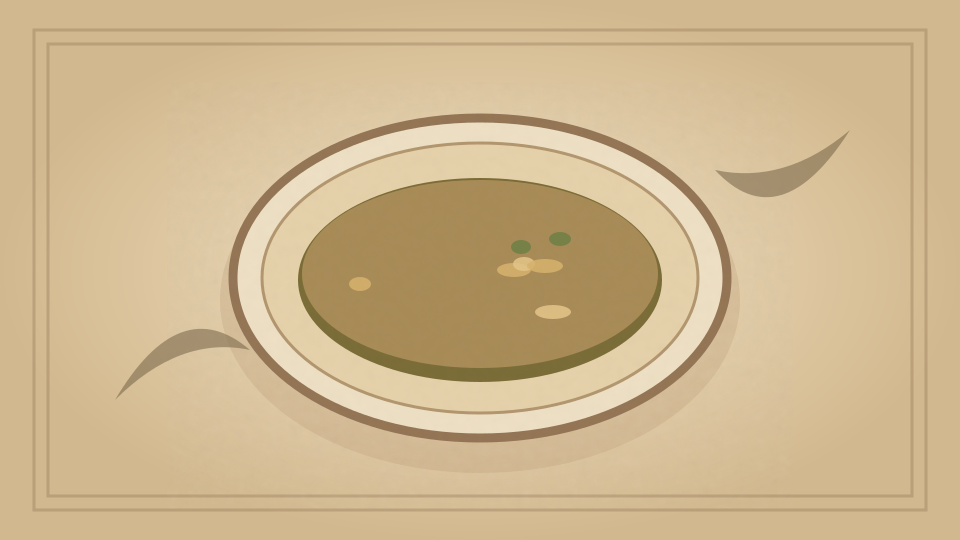

1910 · Fannie Merritt Farmer · SOUPS WITHOUT STOCK
Mock Bisque Soup
The Boston Cooking-School Cook Book

Historical Recipe
The following text is extracted from the 1910 edition, retaining historical terminology and quantities.
Original Ingredients & Directions
½ can tomatoes
2 teaspoons sugar
¼ teaspoon soda
½ onion, stuck with 6 cloves
Sprig of parsley
Bit of bay leaf
¾ cup stale bread crumbs
4 cups milk
½ tablespoon salt
⅛ teaspoon pepper
⅓ cup butter
Scald milk with bread crumbs, onion, parsley, and bay leaf. Remove seasonings and rub through a sieve. Cook tomatoes with sugar fifteen minutes; add soda and rub through a sieve. Reheat bread and milk to boiling-point, add tomatoes, and pour at once into tureen over butter, salt, and pepper. Serve with croûtons, crisp crackers, or Souffléd crackers.
Automatically extracted transcription; editorial verification pending. Historical instructions may not meet modern food-safety standards.